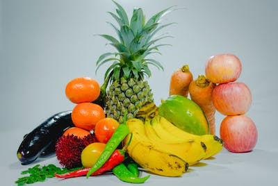

Losing weight can be difficult both physically and mentally. Remember what we already address. Be patient and consistent and the results will come. Try not to focus too much on the scale and focus on simply making progress. First thing we need to address is your diet. In order to lose weight you need to eat in a caloric deficit. This means that you eat less calories than your body burns throughout the day. This allows your body to start to burn calories stored in fat for energy, and you will lose weight. You should focus on eating lots of fruits and vegetables and lean protein (lean ground beef, chicken, fish). Remember, plan a diet you can stick to. It is not the end of the world to eat a few sweets here and there, just don’t go overboard! Next, we need to address your workout routine. You will want to focus your workouts mostly around cardio. This includes running on the treadmill, riding a bike, doing the elliptical, and doing the stair stepper. You can also include HIIT workouts. Click here for some cardio workout ideas. More than anything, do not overwork yourself. Workout as much as you can take, and no more than that.
